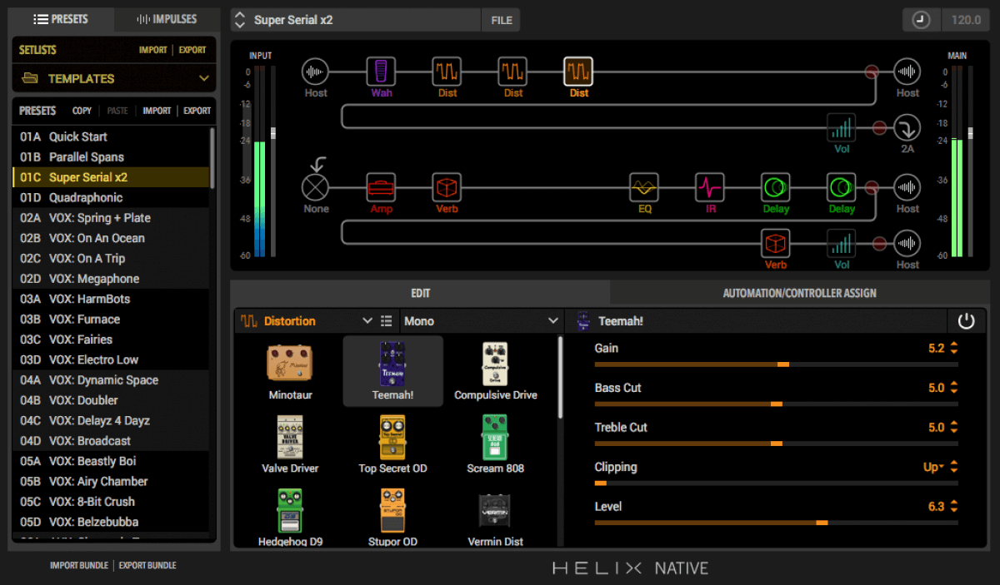

LINE 6-
Helix™ Presets
I switch snapshots rather than presets between songs.
Here are the ones i use most often.

I switch snapshots rather than presets between songs.
Here are the ones i use most often.